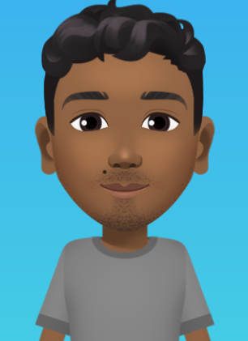

Rafael Montenegro
Estudante de Tecnologia em Análises e Desenvolvimento de Sistemas


Sobre
Hello World! meu nome é Rafael Montenegro, seja bem-vindo(a)!
Sou uma pessoa que gosta de conteúdos da Área de Tecnologia, Informática e programação. Atualmente estudando sobre HTML, CSS, JavaScript, Java, Asp.Net, C#.. Gosto muito de café, e meus principais hobbies são andar de bicicleta, tocar violão e assistir um filme ou séries.